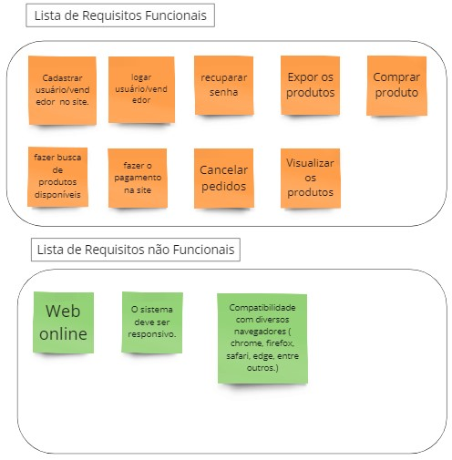
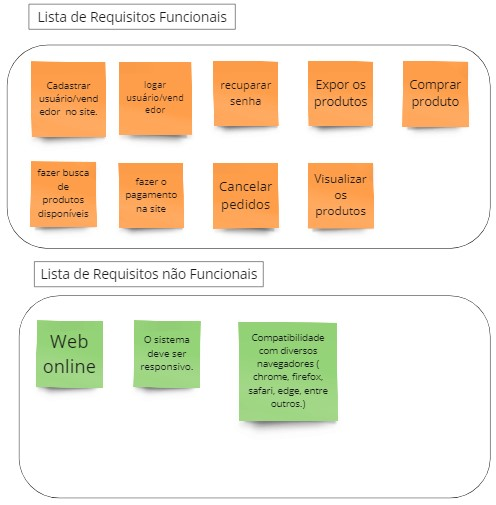
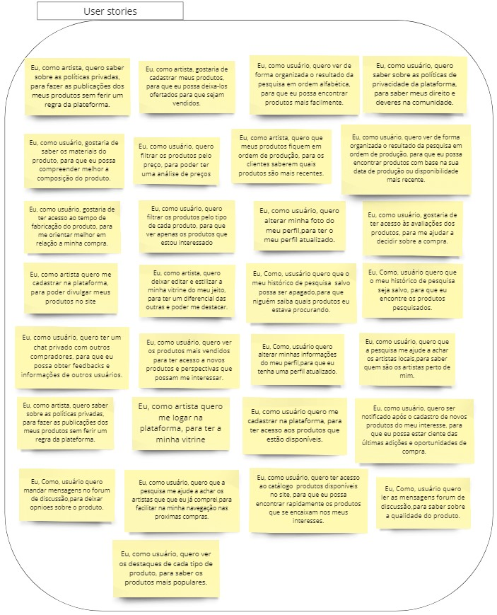
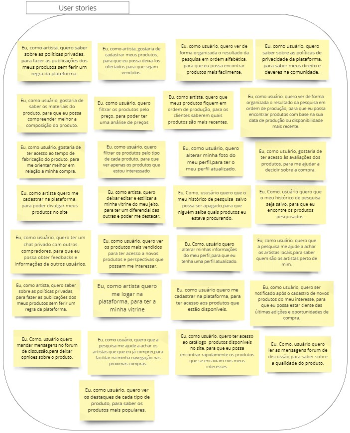

Backlog
Backlog
O backlog do produto consiste em uma lista com os requisitos que são identificados ao longo do projeto, é uma artefato dinâmico, ou seja, pode ser atualizado conforme novas necessidades e requisitos forem identificados. Para auxiliar na construção do backlog foi utilizado o SAFe. Além disso para a elaboração das user stories ficou definido a formatação de who-what-why, que significa quem, o quê e porquê, ou seja, as user stories definidas no backlog deverão ter o seguinte formato:
Eu como '< quem >', quero '< o que >', para '< porque >'
abaixo está o backlog do nosso projeto:
Obs: Para uma melhor visualização do nosso Backlog , clique aqui. para acessar o nosso mural
Elicitação e descoberta
 

análise e consenso


Declaração
 

Verificação e validação


Organização e atualização
Para elaborar a priorização e organização das user stories do backlog foi utilizado um checklist analisando cada US baseada nos critérios de Valor de negócio, viabilidade e complexidade técnica. Para uma melhor visualização da nossa tabela de prioridade, clique aqui. para acessar a nossa planilha
| US | Valor de Negocio | Viabilidade |
Complexidade Tecnica |
Total |
|---|---|---|---|---|
| Eu, como usuário quero alterar minha foto do meu perfil,para ter o meu perfil atualizado. | 5 | 4 | 4 | 13 |
| Eu, como usuário, quero ver os produtos mais vendidos para ter acesso a novos produtos e perspectivas que possam me interessar. | 4 | 3 | 3 | 10 |
| Eu, como artista, gostaria de cadastrar meus produtos, para que eu possa deixa-los ofertados. | 5 | 5 | 3 | 13 |
| Eu, como usuário, quero alterar minhas informações do meu perfil,para que eu tenha um perfil atualizado. | 5 | 4 | 4 | 13 |
| Eu, como usuário, quero ter acesso ao catálogo de produtos disponíveis no site, para que eu possa encontrar rapidamente os produtos que se encaixam nos meus interesses. | 5 | 5 | 4 | 14 |
| Eu, como artista quero me cadastrar na plataforma como expositor, para poder divulgar meus produtos no site | 5 | 5 | 3 | 13 |
| Eu, como usuário quero me cadastrar na plataforma como comprador, para ter acesso aos produtos que estão disponíveis para venda. | 5 | 5 | 3 | 13 |
| Eu, como artista, quero me logar na plataforma, para ter a minha vitrine | 5 | 5 | 4 | 14 |
| Eu, como usuário, gostaria de publicar avaliações sobre os produtos que comprei, para que eu possa ajudar novos usuários a decidir sobre sua compra. | 5 | 4 | 3 | 12 |
| Eu, como usuário, gostaria de ter acesso às avaliações dos produtos, para me ajudar a decidir sobre a compra. | 5 | 4 | 4 | 13 |
| Eu, como usuário, quero filtrar os produtos pelo tipo de cada produto, para que ver apenas os produtos que estou interessado | 5 | 3 | 2 | 10 |
| Eu, como usuário, quero que a pesquisa me ajude a achar os artistas que que eu já comprei, para facilitar na minha navegação nas proximas compras. | 3 | 2 | 2 | 7 |
| Eu, como usuário, quero ver os destaques de cada tipo de produto, para saber os produtos mais populares. | 5 | 3 | 2 | 10 |
| Eu, como usuário, quero ter um chat privado com outros compradores, para que eu possa obter feedbacks e informações de outros usuários | 4 | 2 | 1 | 7 |
| Eu, como usuário, quero ler as mensagens fórum de discussão,para saber sobre a qualidade do produto. | 5 | 3 | 2 | 10 |
| Eu, como artista, quero que meus produtos fiquem em ordem de produção, para os clientes saberem quais produtos são mais recentes | 3 | 2 | 2 | 7 |
| Eu, como usuário, quero filtrar os produtos pelo preço, para poder ter uma análise de preços | 5 | 3 | 3 | 11 |
| Eu, como artista, quero editar a minha vitrine do meu jeito, para ter um diferencial das outras e poder me destacar. | 4 | 2 | 3 | 9 |
| Eu, como usuário, quero ver de forma organizada o resultado da pesquisa em ordem alfabética, para que eu possa encontrar produtos mais facilmente. | 4 | 4 | 3 | 11 |
| Eu, como usuário, quero ser notificado após o cadastro de novos produtos do meu interesse, para que eu possa estar ciente das últimas adições e oportunidades de compra. | 4 | 1 | 2 | 7 |
| Eu, como usuário, quero ver de forma organizada o resultado da pesquisa em ordem de produção, para que eu possa encontrar produtos com base na sua data de produção ou disponibilidade mais recente. | 3 | 3 | 2 | 8 |
| Eu, como, usuário quero mandar mensagens no forum de discussão,para deixar opinioes sobre o produto. | 1 | 1 | 1 | 3 |
| Eu, como usuário, quero que o meu histórico de pesquisa seja salvo, para que eu encontre os produtos pesquisados. | 1 | 1 | 1 | 3 |
| Eu, como usuário, quero que o meu histórico de pesquisa salvo possa ser apagado, para que ninguém saiba quais produtos eu estava procurando. | 1 | 1 | 1 | 3 |
| Eu, como usuário, quero que a pesquisa me ajude a achar os artistas locais, para saber quem são os artistas perto de mim. | 1 | 1 | 1 | 3 |
| Eu, como usuário, quero ter um chat privado com o artista, para que eu possa tirar dúvidas acerca do produto ofertado. | 1 | 1 | 1 | 3 |